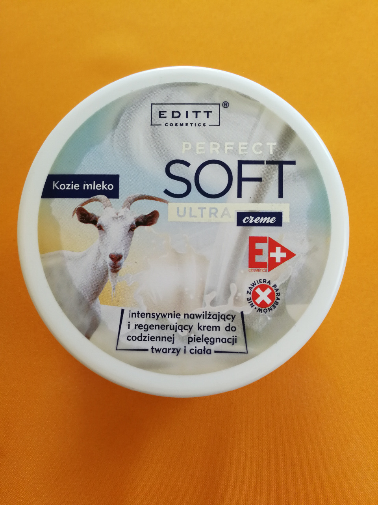
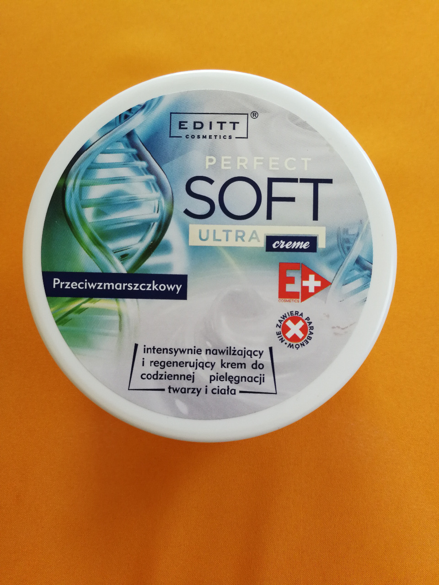
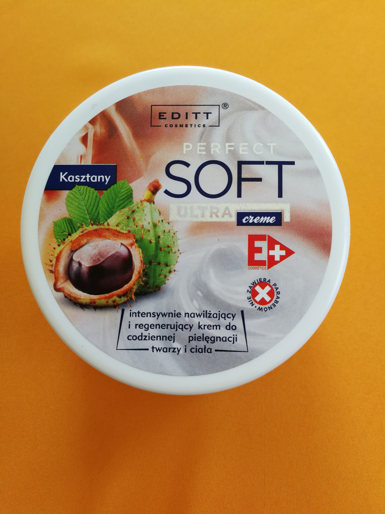
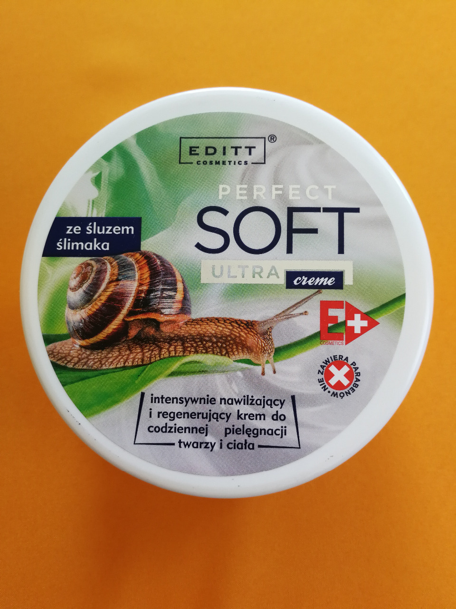
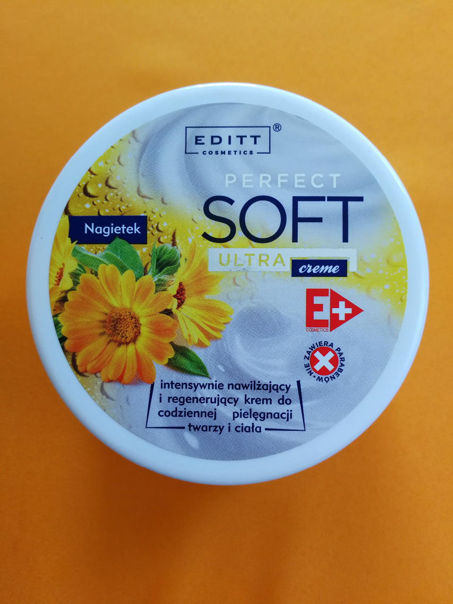
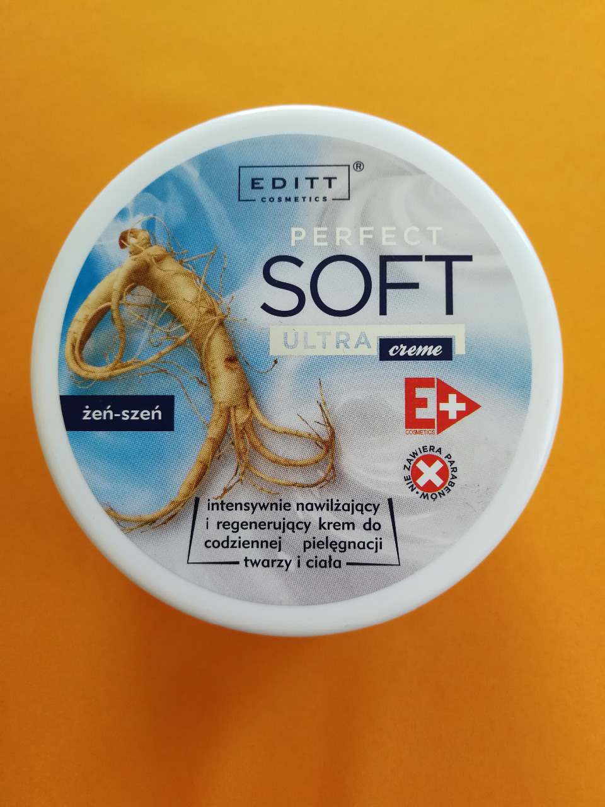
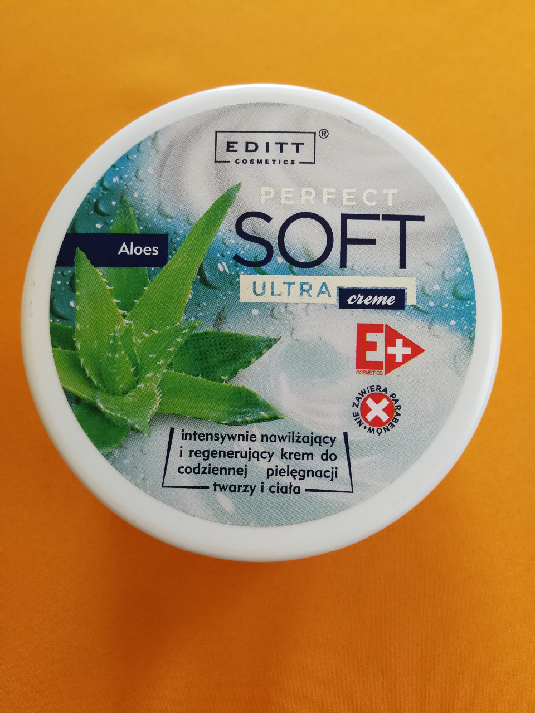
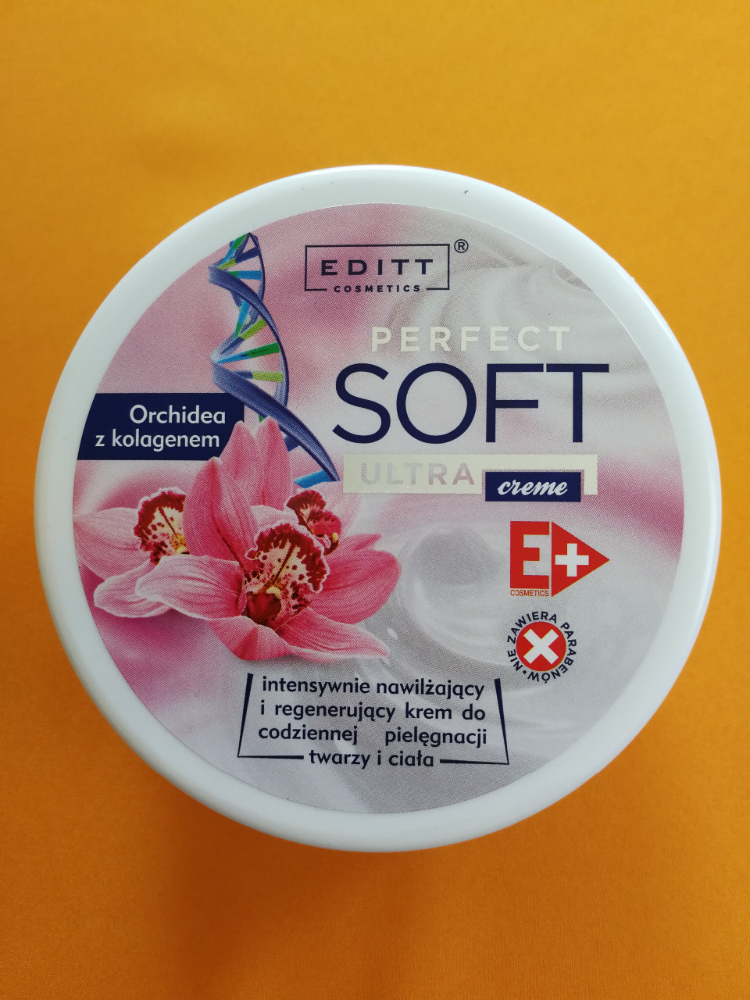
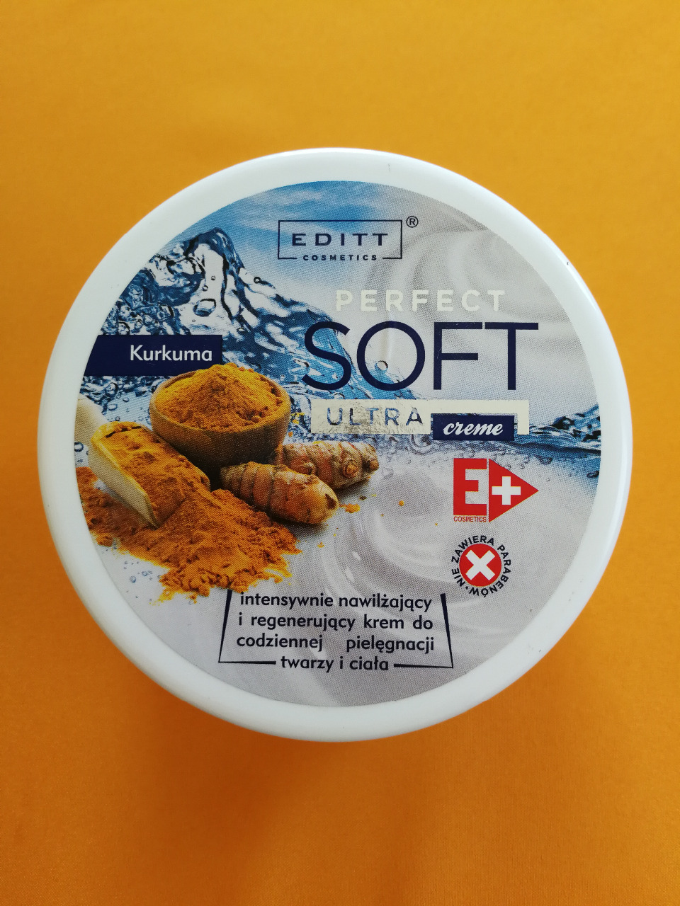
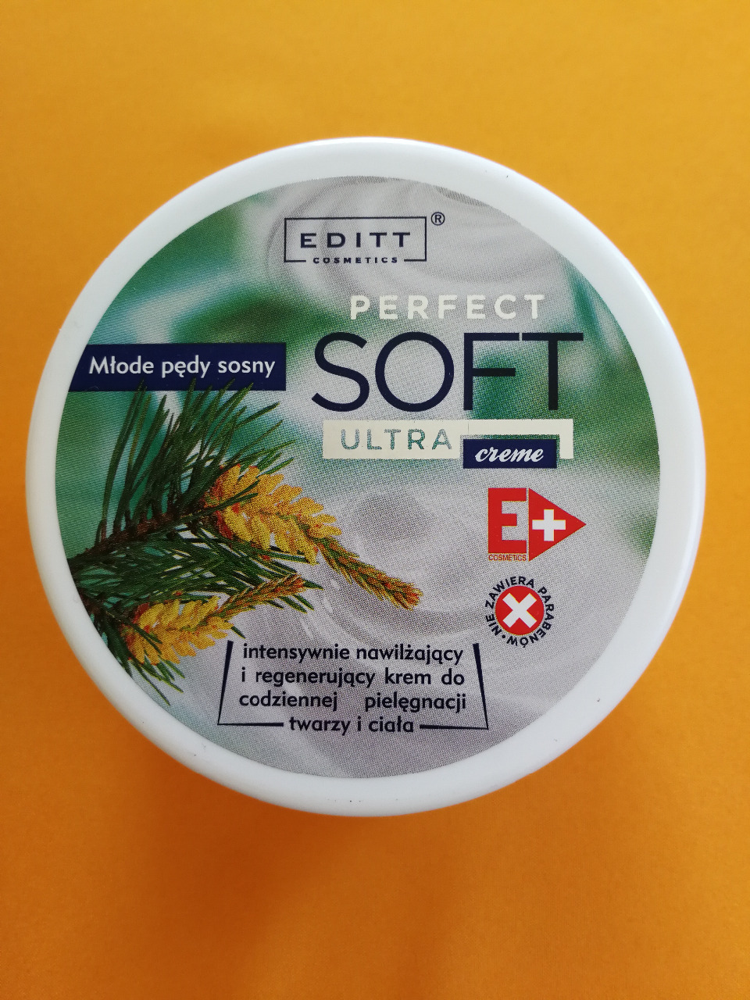

1. Natúr kecsketejes krém
Soft Perfect Ultra Parabénmentes Kecsketej Krém 150g
Alkalmazás:
Csak külsőleg. Arc-és testápoló krém minden bőrtípusra.
Hatása:
Eltűnő, gyorsan felszívódó krém.
Értékes vitaminok, ásványi anyagok természetes forrása.
Hosszantartóan és mélyen hidratál, regenerál, intenzíven kisimítja a ráncokat, táplálja a bőrt, növeli a természetes ellenálló képességét.
Ára: 1500 Ft/db (Az ár az ÁFÁ-t tartalmazza.)

2. Kollagénes ránctalanító krém
Soft Perfect Ultra Parabénmentes Ránctalanító Krém 150g
Alkalmazása:
Csak külsőleg. Arckrém minden bőrtípusra.
Hatása:
Kollagénnel dúsított krém, ezáltal intenzíven kisimítja a ráncokat, véd a káros környezeti hatások ellen.
Gyorsan felszívódó krém, viszont annál hosszabb hatású.
Ára: 1500 Ft/db (Az ár az ÁFÁ-t tartalmazza.)

3. Vadgesztenyés krém
Soft Pefect Ultra Parabénmentes Gesztenye Krém 150g
Alkalmazása:
Csak külsőleg. Fáradt és feszülő lábak ápolására ajánljuk.
Hatása:
A készítmény rendszeres használata frissíti, nyugtatja a lábakat. Puhává, rugalmassá, bársonyossá teszi a bőrt.
Ára: 1500 Ft/db (Az ár az ÁFÁ-t tartalmazza.)

4. Csigás krém
Soft Perfect Ultra Parabénmentes Krém Csiganyálkával 150g
Alkalmazása:
Csak külsőleg alkalmazható arc- és testápló krém.
Hatása:
Gazdag kollagénben, elasztinban, allantoinban és más mikrotápanyagokban. Kiválóan ránctalanít, regenerál.
Hatékony öregedésgátló, sejtmegújító, segít helyreállítani az aknés hegesedést, valamint fenntartja az egészséges bőrkondíciót.
Ára: 1500 Ft/db (Az ár az ÁFÁ-t tartalmazza.)

5. Körömvirágos krém
Soft Perfect Ultra Parabénmentes Körömvirág Krém 150g
Alkalmazása:
Csak külsőleg. Arc és testápoló krém minden bőrtípusra.
Hatása:
Gyulladáscsökkentő hatású, ezért alkalmas visszérgyulladás által okozott kellemetlen tünetek csillapítására is.
Hámregeneráló, bőrnyugtató, így a száraz, érzékeny, ráncos bőr ápolására is ajánlott.
Mérsékli a bőr öregedési folyamatát, segíti a bőr regenerálódását.
Ára: 1500 Ft/db (Az ár az ÁFÁ-t tartalmazza.)

6. Ginsenges krém
Soft Perfect Ultra Parabénmentes Ginseng Krém 150g
Alkalmazása:
Csak külsőleg. Arc és testápoló krém minden bőrtípusra.
Hatása:
Kisimító, frissítő, sejtmegújító hatása van.
Hámregeneráló, bőrnyugtató, így a száraz, érzékeny, ráncos bőr ápolására is ajánlott.
Gyorsan beszívódik, növeli a bőr rugalmasságát, feszességét.
Ára: 1500 Ft/db (Az ár az ÁFÁ-t tartalmazza.)

7. Aloe Verás krém
Soft Perfect Ultra Parabénmentes Aloe Vera Krém 150g
Alkalmazása:
Csak külsőleg. Száraz és vízhiányos bőr ápolására alkalmas hidratáló krém.
Hatása:
A készítmény számos vitamint, fehérjét, ásványi anyagot és aminosavat tartalmaz.
Fertőtlenítő, vitalizáló és savköpeny megőrző képességgel rendelkezik ,ezáltal elősegíti az egészséges és szép bőr megtartását.
Ára: 1500 Ft/db (Az ár az ÁFÁ-t tartalmazza.)

8. Orchideás krém
Soft Perfect Ultra Parabénmentes Orchideás és Kollagénes Krém 150g
Alkalmazása:
Csak külsőleg alkalmazható arc- és testápoló krém.
Hatása:
Az orchidea kivonat és a kollagén megfiatalítja a bőrt megőrizve az egészséges megjelenését és rugalmasságát.
A krém visszaállítja a bőr simaságát, feszességét és hidratáltságát.
Védelmet nyújt az irritációval szemben, valamint bőrnyugtató hatású.
Ára: 1500 Ft/db (Az ár az ÁFÁ-t tartalmazza.)

9. Kurkumás krém
Soft Perfect Ultra Parabénmentes Kurkuma Krém 150g
Alkalmazása:
Csak külsőleg alkalmazható arc- és testápló krém.
Hatása:
A kurkuma kivonat antioxidáns, antibakteriális és nyugtató hatású.
Táplálja, hidratálja, regenerálja a száraz, hámló, irritált bőrt.
Kiváló izületi duzzanatok ápolására is.
Ára: 1500 Ft/db (Az ár az ÁFÁ-t tartalmazza.)

10. Fenyőrügyes krém
Soft Perfect Ultra parabenmentes Fenyőrügy Krém 150g
Alkalmazása:
Csak külsőleg alkalmazható arc- és testápoló krém.
Hatása:
A fenyőrügy az antibakteriális hatóanyagok tárháza és védi a bőrt a fertőzések ellen.
Kivonata kiváló a száraz, érzékeny, repedezett, sérült bőr regenerálására.
A bőrkeményedésre puhító és ápoló hatású.
Ára: 1500 Ft/db (Az ár az ÁFÁ-t tartalmazza.)